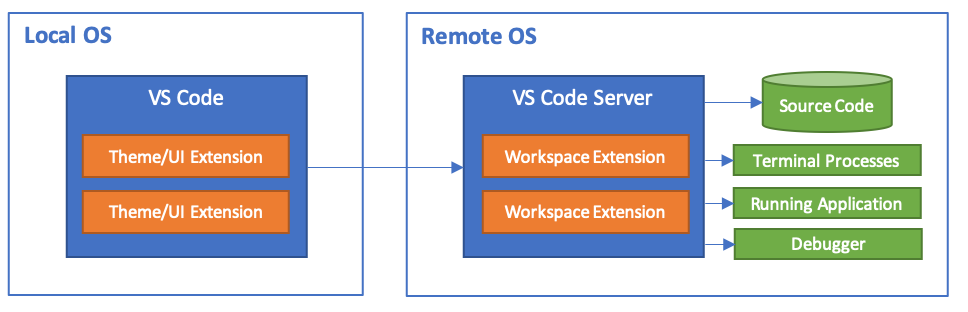

VS Code Remote Development
Visual Studio Code Remote Development allows you to use a container, remote machine, or the Windows Subsystem for Linux (WSL) as a full-featured development environment. You can:
- Develop on the same operating system you deploy to or use larger or more specialized hardware.
- Separate your development environment to avoid impacting your local machine configuration.
- Make it easy for new contributors to get started and keep everyone on a consistent environment.
- Use tools or runtimes not available on your local OS or manage multiple versions of them.
- Develop your Linux-deployed applications using the Windows Subsystem for Linux.
- Access an existing development environment from multiple machines or locations.
- Debug an application running somewhere else such as a customer site or in the cloud.
No source code needs to be on your local machine to get these benefits. Each extension in the Remote Development extension pack can run commands and other extensions directly inside a container, in WSL, or on a remote machine so that everything feels like it does when you run locally.

Getting started
Remote Development extension pack
The Remote Development extension pack includes three extensions. See the following articles to get started with each of them:
- Remote - SSH - Connect to any location by opening folders on a remote machine/VM using SSH.
- Remote - Containers - Work with a separate toolchain or container-based application inside (or mounted into) a container.
- Remote - WSL - Get a Linux-powered development experience in the Windows Subsystem for Linux.
While most VS Code extensions should work unmodified in a remote environment, extension authors can learn more at Supporting Remote Development.
Remote tutorials
The tutorials below will walk you through running Visual Studio Code with the Remote Development extensions.
| Tutorial | Description |
|---|---|
| Remote via SSH | Connect to remote and virtual machines with Visual Studio Code via SSH. |
| Work in WSL | Run Visual Studio Code in Windows Subsystem for Linux. |
| Develop in Containers | Run Visual Studio Code in a Docker Container. |
| GitHub Codespaces | Connect to a codespace with Visual Studio Code. |
GitHub Codespaces
GitHub Codespaces provides remote development environments that are managed for you. You can configure and create a development environment hosted in the cloud, which is spun up and available when you need it.
Questions or feedback
- See Tips and Tricks or the FAQ.
- Search on Stack Overflow.
- Add a feature request or report a problem.